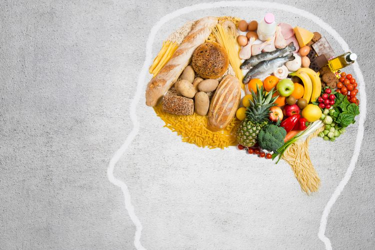

6 Cara Menjaga Otak Agar Awet Muda
 Sumber :https://www.kompas.com/
Sumber :https://www.kompas.com/
Seiring bertambahnya usia manusia, otak dan fungsinya juga akan mengalami penuaan. Kerusakan kognitif dapat menyebabkan penurunan kemampuan kognitif yang cepat, seperti hilsngnya memori dan kemampuan berpikir Bagaimana mencegahnya? Berikut adalah 6 cara menjaga otak awet muda. 1. Jaga pikiran agar tetap aktif Para ilmuwan telah menemukan bahwa ketika menjaga pikiran tetap aktif, keterampilan berpikir akan tetap tajam. Dilansir dari laman WebMd, aktivitas seperti permainan, teka-teki silang, dan aktivitas mental lainnya dapat membantu meningkatkan daya ingat. Melakukan kegiatan seperti menggambar, melukis, seni dan kerajinan lainnya juga dapat membantu memperbaiki fungsi otak. 2. Latihan fisik Latihan fisik tidak hanya menurunkan tekanan darah, memperbaiki kadar kolesterol, dan mengurangi stres, namun bisa membantu perkembangan sel otak baru. Dilansir dari New York Times, penelitian sebelumnya telah menemukan bahwa tikus yang melakukan aktivitas fisik dapat melipatgandakan jumlah neuron baru yang diproduksi di otak. Hal ini juga dapat menunda kemungkinan demensia pada manusia. 3. Konsumsi makanan sehat Mengonsumsi makanan sehat adalah cara yang bagus untuk membantu menjaga pikiran, tubuh, dan jiwa yang sehat. Makan dengan baik juga bisa meningkatkan tingkat energi, meningkatkan sistem kekebalan tubuh dan tidur nyenyak di malam hari, yang semuanya baik untuk otak. Buah super seperti blueberry juga dapat membantu mengurangi efek kondisi seperti penyakit Alzheimer atau demensia. Buah ini juga memiliki kemampuan untuk meningkatkan kemampuan belajar dan motorik mereka yang berusia lanjut.  4. Asam lemak omega-3 Asam lemak omega-3 dapat membantu melawan gangguan jiwa, termasuk depresi, demensia, dan skizofrenia. Menurut Gómez-Pinilla, salah satu anggota UCLA's Brain Research Institute and Brain Injury Research Center, asam lemak Omega-3 mendukung plastisitas sinaptik atau kemampuan otak untuk terlibat dalam pembelajaran atau pengalaman. Hal ini juga berpengaruh secara positif pada ekspresi beberapa molekul yang terkait dengan pembelajaran dan memori yang ditemukan pada sinapsis. Asam lemak omega-3 sangat penting untuk fungsi otak normal. 5. Mendengarkan musik Mendengarkan musik bisa membantu mengurangi kecemasan, depresi, tekanan darah, dan meningkatkan daya ingat. "Jika kalian ingin agar otak tetap bagus selama proses penuaan, mendengarkan atau bermain musik adalah alat yang hebat, ini menyediakan latihan otak total," kata ahli otolaringologi di Johns Hopkins Medicine 6. Bersosialisasi Periset telah menemukan bahwa orang-orang yang menderita kesepian memiliki risiko terkena demensia yang meningkat hingga 65 persen. "Ini hampir tidak dapat dipercaya, tapi kita tahu bahwa kesepian lebih buruk bagi kesehatan daripada 15 batang rokok sehari, menjadi pecandu alkohol dan obesitas yang tidak sehat," kata Profesor James Goodwin, seorang pemimpin ilmuwan di Age UK kembali